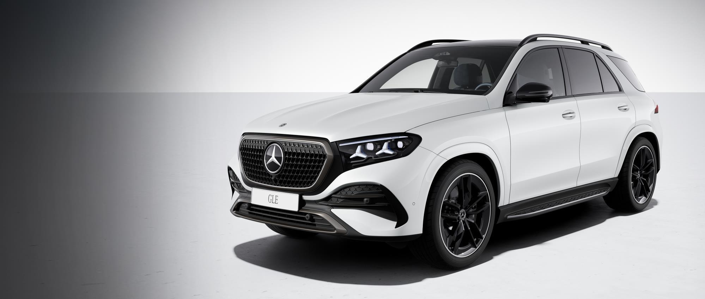
GLE 450 4MATIC AMG Line
SUV의 여유, 가족의 일상에.
- AMG 바디스타일링 · 21인치 AMG 휠
- 가죽 시트 · 뒷좌석 전동 조절
- 에어매틱 · 파노라믹 선루프
THE NEW GLE & GLS · MY27
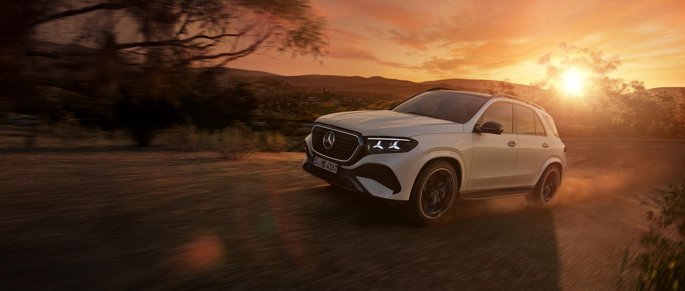
이미지는 모델의 디자인을 보여주는 예시이며, 휠·외장 패키지 등은 선택한 국내 사양과 다를 수 있습니다.
CHOOSE YOUR SUV
GLE SUV와 쿠페, 그리고 6인승·7인승 GLS. 라이프스타일에 맞춰 비교해 보세요.

SUV의 여유, 가족의 일상에.
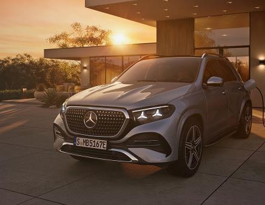
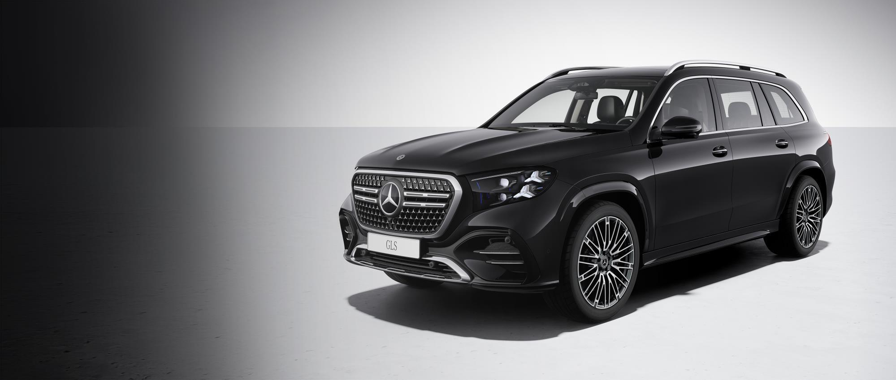
여유로운 공간에 역동적인 인상.
사진은 디자인 예시입니다. 국내 기본 휠과 옵션 구성는 각 모델 설명을 확인해 주세요.
PURCHASE GUIDE
원하는 모델·색상·좌석 구성을 알려주시면 사전계약 조건과 예상 출고 일정을 안내해 드립니다.
GLE의 두 가지 차체, GLS의 6인승·7인승과 AMG Line을 비교합니다.
현재 가격은 미정입니다. 차량 가격과 계약금, 선택 옵션 비용을 안내받은 뒤 계약을 진행합니다.
출시 이후 선택하신 구성과 차량 배정에 맞춰 예상 인도 일정을 개별 안내해 드립니다.
2026년 11월 말 출시 예상 · 가격 미정. 실제 인도 일정은 선택 구성과 차량 배정에 따라 달라집니다. 신형 MY27의 구매 혜택은 판매 중인 MY26 모델과 별도로 안내합니다.
EQUIPMENT
GLE 450 SUV·쿠페와 GLS 450 국내 라인업의 공통 기본 사양입니다.
12.3인치 화면 3개를 하나로 연결한 실내. 증강현실 헤드업 디스플레이와 내비게이션, 스마트폰 연동을 갖췄습니다.
에어 서스펜션과 열·소음 차단 라미네이티드 글래스로 긴 이동에서도 편안함을 더합니다.
발광 라디에이터 그릴과 디지털 라이트. 드라이빙 어시스턴스 패키지 플러스, 360° 카메라도 기본입니다.
앞좌석 열선·통풍·메모리, 열선 스티어링 휠, 부메스터 사운드, 파노라믹 선루프와 파워 클로징을 갖췄습니다.
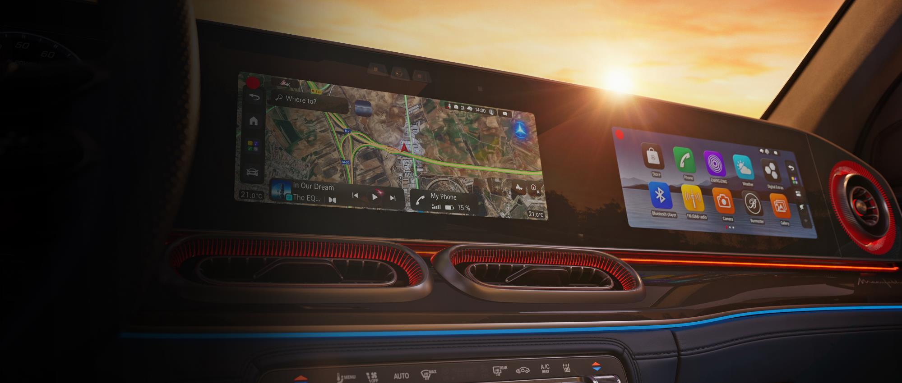
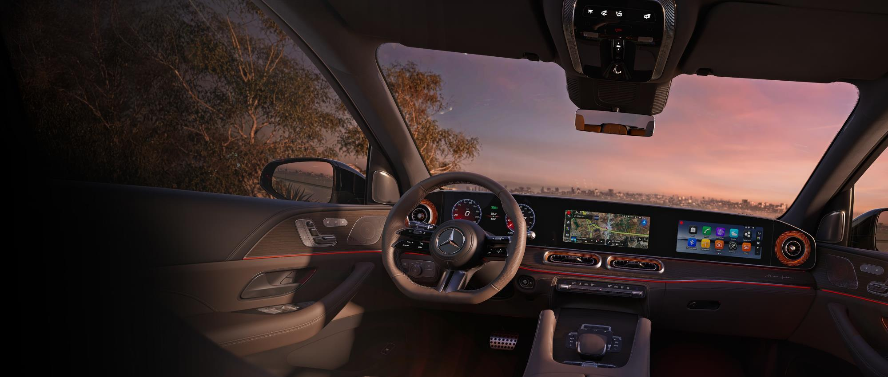
AMG Line · 21인치 AMG 5 트윈 스포크
AMG 바디스타일링 · 21인치 AMG 5 트윈 스포크
가죽
나파 가죽
미적용
기본
기본
미적용
기본
기본
에어매틱
에어매틱
블랙 / 비치 브라운·블랙 / 마키아토 베이지·블랙
블랙 / 비치 브라운·블랙 / 투톤 화이트·블랙 / 클래식 레드·블랙
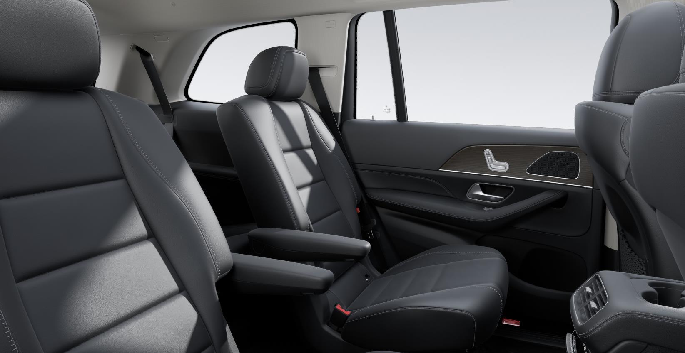
SIX OR SEVEN
6인승은 두 개의 독립 시트와 중앙 통로로 3열 이동이 편리합니다. 7인승은 2열에 세 명이 앉을 수 있고, 뒷좌석 통풍과 멀티컨투어 시트 등 편의 옵션이 더해집니다.
GLS 450과 GLS 450 AMG Line 모두 6인승·7인승을 선택할 수 있습니다.
독립 시트 2개 · 중앙 통로
벤치 시트 3개
기본
기본
미적용
기본
미적용
기본
미적용
기본
기본
기본
기본
기본
일반 GLS 450은 21인치 텐홀 디자인 휠, AMG Line은 22인치 AMG 멀티 스포크 휠을 갖춥니다. AMG 바디스타일링·스포츠 스티어링 휠·AMG 플로어 매트도 AMG Line에 적용됩니다.
GLE·GLS 공기 청정 패키지: 50만원. 초기 생산 차량에 한해 적용되므로 차량별 구성을 확인해 주세요.
GLE·GLE 쿠페 휠: 21인치 AMG 멀티 스포크 휠을 무료 선택할 수 있습니다. 22인치 AMG 5 트윈 스포크 휠은 226만원이며, 8월 초기 생산 차량에 한해 적용됩니다.
실내 트림: 앤트러사이트 오픈 포어 오크 우드가 기본입니다. 오픈포어 다크 브라운 버치 우드, 월넛 브라운 피쉬본 우드, 플로잉 라인 알루미늄을 무료 선택할 수 있습니다.
선택 옵션 금액은 부가세 포함입니다. 색상·루프 라이너·트림 조합과 생산 시기에 따라 선택 가능한 구성이 달라집니다.
COLOUR & INTERIOR
국내에서 선택할 수 있는 외장과 실내를 살펴보세요.
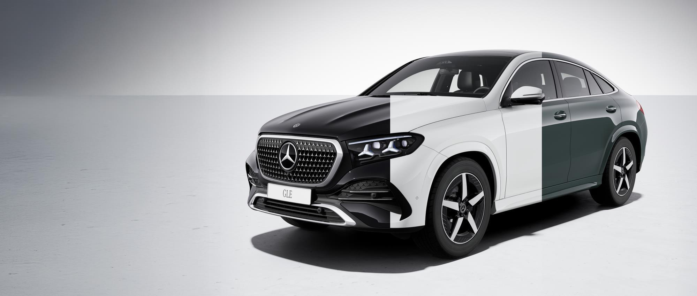
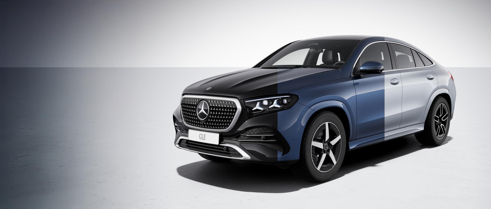
GLE 쿠페 외장 색상 예시 · GLE SUV에도 같은 5가지 색상을 선택할 수 있습니다.
솔리드 도장 예시의 맨 왼쪽 블랙은 국내 선택 색상에 포함되지 않습니다. 하이테크 실버는 9월 생산분부터 선택할 수 있습니다. 화면과 실제 도장 색상에는 차이가 있을 수 있습니다.
INTERIOR
선호하는 시트 색상을 눌러보세요.
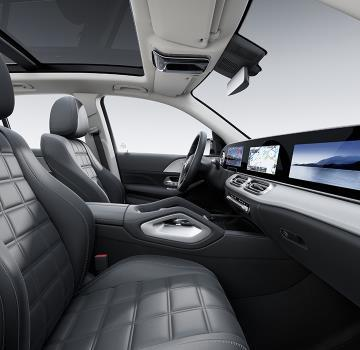
나파 가죽 · 색상 이미지 준비 중
AT A GLANCE
4MATIC · 9G-TRONIC 자동 9단
4MATIC · 9G-TRONIC 자동 9단
EQ 부스트 · 2세대 통합 스타터 제너레이터
EQ 부스트 · 2세대 통합 스타터 제너레이터
85L
90L
에어매틱 · 어댑티브 댐핑
에어매틱 · 어댑티브 댐핑
드라이빙 어시스턴스 패키지 플러스 · 360° 카메라
드라이빙 어시스턴스 패키지 플러스 · 360° 카메라
국내 인증 연비·출력·차체 치수는 확정 안내에 맞춰 추가됩니다.
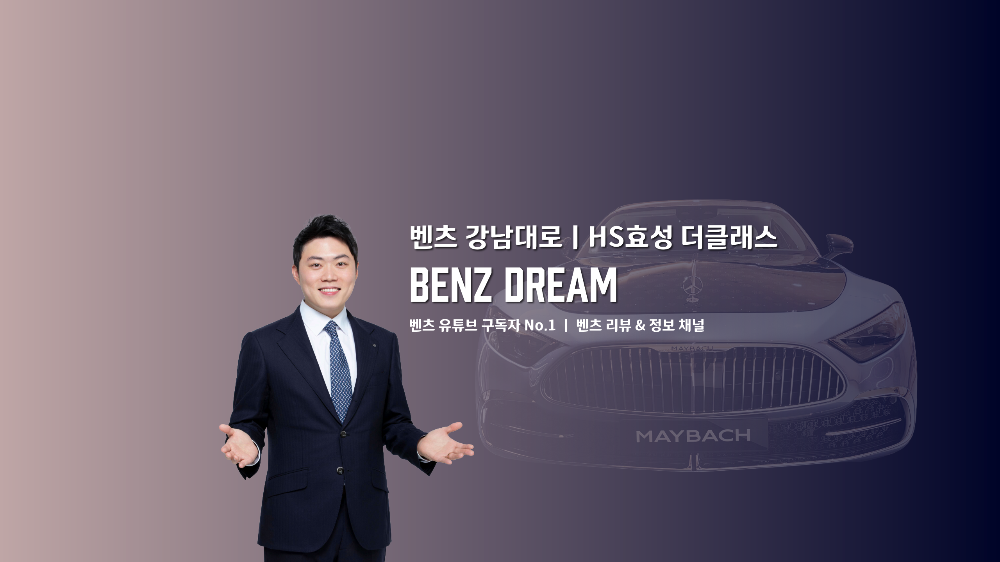
YOUR NEXT MERCEDES-BENZ
모델과 색상 선택부터 계약과 출고까지.
궁금한 내용을 편하게 남겨주세요.
HS효성더클래스 강남대로지점
서울시 강남구 강남대로 284
아닙니다. 6인승은 2열 독립 시트와 중앙 통로가 특징입니다. 7인승은 뒷좌석 통풍·멀티컨투어 시트, 컴포트 패키지 플러스, 무선 충전과 리모트 컨트롤을 갖춥니다. 뒷좌석 엔터테인먼트와 3열 열선은 두 구성 모두 기본입니다.
페이지 사진은 모델의 디자인과 색상을 보여주는 예시입니다. 휠과 외장 패키지, 루프 라이너 등은 주문 구성에 따라 달라집니다. 국내 기본 사양은 라인업과 비교 항목을 기준으로 살펴보세요.
신형 MY27의 구매 조건은 기존 MY26 조건과 별도로 안내합니다. 원하시는 모델과 결제 방식을 알려주시면 차량별 가격·혜택·예상 출고 일정을 함께 확인해 드립니다.